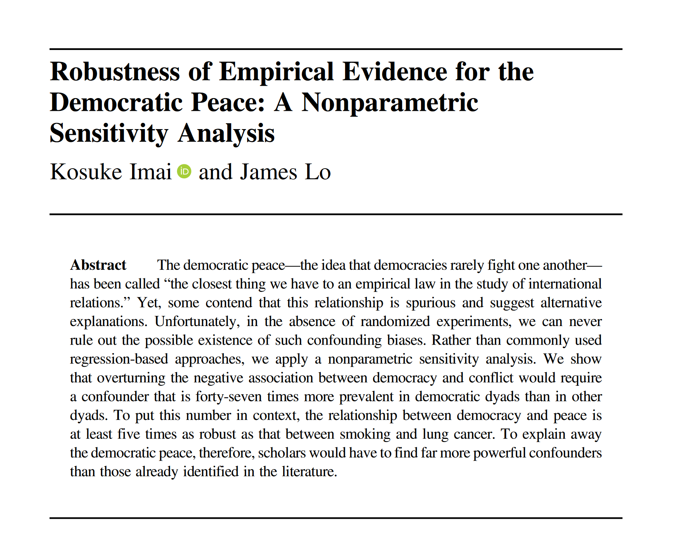
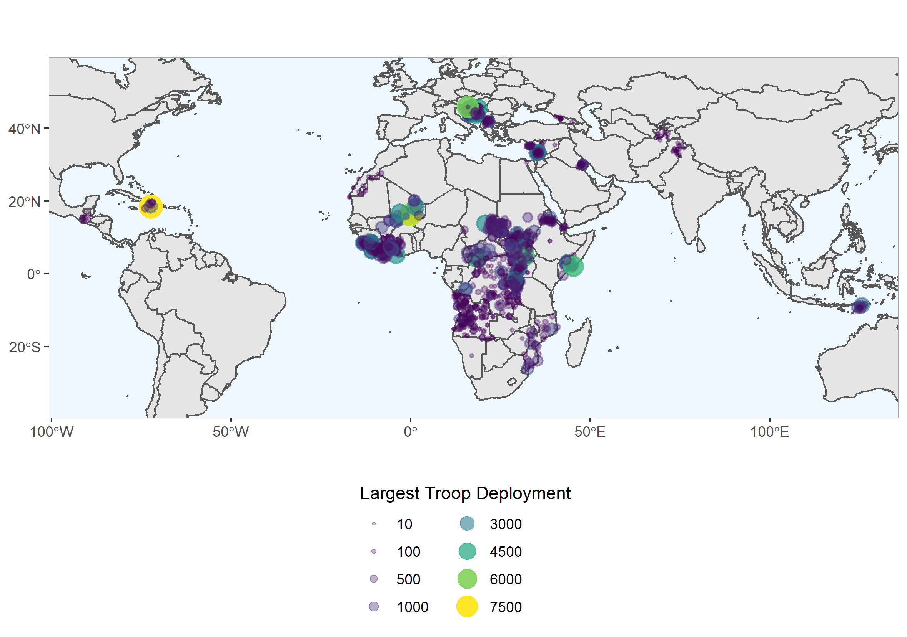

Causal Inference for Casuals, Part IV
Assumptions Required for Causal Inference
If you’ve come this far along in the series, you should have introductory familiarity with potential outcomes, DAGs, confounding bias, and treatment effects. This post is the final one of its kind before we begin to discuss particular methods for making causal inferences. After this blog, we will review regression, matching, weighting, etc. However, an important final stop before “opening the toolbox” is a review of the assumptions required for causal inference. For those reading this who come from a scientific/statistics background, you are already familiar with model assumptions. For any model to produce unbiased estimates, you need to satisfy the assumptions the model makes. Causal inference isn’t a model. However, if one wishes to make causal claims, three assumptions should be met (and if they are not met, they should be assessed and remedied to the best of the researchers capabilities). We’ll start with the assumption that you should be familiar with by now.
Ignorability
The ignorability assumption is one you have read about in the three prior blog posts (I just didn’t refer to it specifically as “the ignorability assumption”). This assumption states that we can ignore confounding effects in our research design. Recall that the randomized controlled trial (RCT) gets to do this since treatment is randomized. When the treatment is randomized, any known or unknown confounding effects can be ignored because randomization eliminated the causal arrow from the confounder to the treatment. We can do this in observational studies as well (where we can’t randomize treatment), but we are limited to “ignoring” only known confounders. We can’t truly satisfy the ignorability assumption in an observational setting due to the threat of unknown or unmeasured confounding. We’ll get to how observational studies handle ignorability in just a second.
You may see this assumption discussed as the “exchangeability” assumption. The ignorability and exchangeability assumptions are the same thing, they just use different language to make the same assumption. For example, the exchangeability assumption states that we should observe the same outcome even if units in the treatment and control groups were hypothetically switched. Remember that randomization, in theory, makes our treated and control groups nearly identical on average. If both groups are essentially the same, along factors that we know of and factors that we don’t know of, and the only difference between the two is treatment status, then we can assign any difference in outcome between the two groups as the causal effect of the treatment. If both groups truly are the same, we should theoretically be able to switch them in an alternative reality and still get the same results. If we were to switch our treated and control units and observe a different effect, that is very problematic, because it implies underlying differences between the groups (basically, there are unobserved confounding effects going on). In other words, if the treated and control units are not exchangeable (outcome would be the same, switch or no switch), then confounding effects are biasing the estimates.
As stated previously, observational studies will never be able to satisfy this assumption. Instead of attempting to work their way around this assumption, researchers seeking to make causal inferences from observational data run sensitivity analyses. I will dedicate an entire blog post towards the end of this series on sensitivity analysis, but the gist of it can be succinctly explained here. While there are many different types of sensitivity analyses, the two underlying questions these types of analyses seek to answer is “how big would an effect from an unobserved confounder need to be to seriously modify the results I estimated?” and “is the existence of such an unknown confounder plausible?”. Let’s use a real-life example to clarify that mouthful.
Many scholars in political science have repeatedly observed a strong association between democracy and war. In particular, joint-democracy (when two countries are democratic) is associated with a serious decrease in the risk of war. While authoritarian states war with other dictatorships, and democracies themselves fight authoritarian regimes pretty frequently, democracies almost never fight wars against each other. This strong association has lead to the “democratic peace theory”. However, many scholars have been skeptical of the democratic peace and argue that the “strong” association so many scholars have observed is spurious and is driven by an unknown or unspecified “underlying factor”. Basically, these critics are arguing that an unknown confounder is biasing estimates and that the relationship between joint-democracy and peace may be spurious. Sensitivity analysis to the rescue! In the abstract below, two scholars tackled this debate with sensitivity analysis and found impressive results.

For the negative association between joint-democracy and war to be overturned (meaning the relationship is close to zero or becomes positive), an unknown confounder would need to be represented in joint-democratic pairing of countries at a rate 47X as prevalent as non-joint-democratic pairings of countries. This answers the first question of sensitivity analysis (how big would the unobserved confounder need to be to overturn the relationship?). The second question is, “is such a confounder likely to exist?” At present, I’m not sure that any political scientist could think of any factor that would be so highly represented in democratic pairs of countries that has not already been accounted for. Does sensitivity analysis satisfy the ignorability assumption? No. Does it tell researchers about the plausibility of a problematic unknown confounder? Yes. And that is a very helpful metric to understand how much violating the ignorability assumption hurts causal estimates. In the case of the democratic peace, sensitivity analysis tells us that the association between joint democracy and peace is likely legitimate. Equipped with the correct methods, one could make a strong case that joint democracy causes peace between democratic countries.
SUTVA
Ah SUTVA… the bane of my personal research. SUTVA stands for the stable unit treatment value assumption. In reality, it is not an assumption itself, rather, SUTVA is a combination of two assumptions: the consistency assumption and the non-interference assumption. Let’s visit the consistency assumption first. It’s actually pretty simple. The consistency assumption merely states that treatment is consistent across all treated units. Let’s return to our favorite example of a RCT where researchers are examining the causal effect of a novel drug. If researchers give different dosages of the experimental drug to different individuals, treatment is not consistent. Even if researchers are giving individuals the same drug, because they are administering different dosages of the drug, these researchers are exposing individuals to different treatments, despite all individuals who received the drug being labelled under the umbrella term of “treated”.
Second, the non-interference assumption states that the outcome of a control/non-treated unit is not influenced by the treatment of treated units. This assumption is particularly hard to satisfy in the realm of conflict management literature, where I come from. Oftentimes, the outcome of interest in this literature is violence. Conflict management scholars seek to analyze the policies that purport to lessen violence and promote peace. Here’s the issue: violence is “contagious”. Many authors have noted that violence clusters geographically and spreads across borders. The good news is that the opposite appears to be true as well. Peace and stability can also be “contagious”. Great news, but also, not great news for causal research in this area. Let’s say we are conflict management researchers studying the effect of United Nations peacekeeping operations (PKOs). Let’s say that we find that PKOs reduce violence and promote peace in countries they are applied to. We know this because we compare countries that received PKOs to countries that did not and compare their levels of violence. Here’s the issue: if peace/violence is contagious, then the effect of treatment (PKO) in a treated country is going to spill over into nearby non-treated countries. And that is where the headache begins.
Violations of SUTVA are not inherent in observational data like the violation of ignorability is. Additionally, while scholars using RCT satisfy the ignorability assumption, these researchers still need to be careful to ensure that their treatments do not have any spillover effects. Many scholars may study treatments that are consistent and do not have spillover effects. Unfortunately, for conflict management scholars and many others, SUTVA will prove to be the biggest headache to work around. And by this dismal assessment, there is no quick fix or helpful tool like sensitivity analysis to overcome violations of SUTVA. For the consistency assumption, researchers need to be intimately aware of variations within their treatment and carefully consider whether it is accurate to conceptualize their treatments as binary (0 = no treatment, 1 = treatment). On this front, I am a bit more optimistic, given the growing body of work designed to estimate causal effects from non-binary treatments.
What about the non-interference assumption? Eh… One thing researchers can do is aggregate units at a higher level. Returning to the UN PKO example, if the concern is that treatment spills over into nearby countries, we could shift our focus on the causal effect of UN PKOs in certain countries to the causal effect of UN PKOs in certain regions. Although, by no means is this approach perfect for a variety of reasons and I wouldn’t suggest this approach for the type of research that I engage in. It may be more appropriate for different types of research, however. Nonetheless, SUTVA - while necessary for making causal inferences - is a pain. However, as interest in causal inference in academia and data science increases, more eyes and brains will turn towards this issue, and I’m confident the collective minds of these fields will figure something out.
Positivity
The positivity assumption states that all types of units within a study should have a greater than zero chance of receiving treatment. To break this down, let’s consider a situation where a violation of the positivity assumption is apparent. We’ll continue with the PKO example. A look at the map below will inform the reader that UN peacekeeping operations are heavily clustered in Sub-Saharan Africa. (So much so that the Geo-PKO page - where the data comes from - just kind of zooms in on Africa and cut out sections of the map like Canada, Scandinavia, and Australia).

I actually think that the zoom in works great for the purposes of demonstrating the positivity assumption. The assumption is clear… UN PKOs are never authorized to go to places like Canada, Scandinavia, and Australia. These countries are too peaceful and will likely never (at least in the foreseeable future) receive a UN PKO, respectively. Which implies… yes, that implies that there are many units in this case where there is a zero percent chance of receiving treatment. This means that any cross-national study of PKOs and their effectiveness effectively does not cover Western European countries, the US, Canada, East Asia, etc. In this respect, countries that receive UN PKOs and countries similar to them (Sub-Saharan African countries, Central American countries, Balkan countries, etc.) are apples and areas that never receive UN PKOs (the ones previously mentioned) are oranges. And you cannot compare apples to oranges.
Positivity even goes beyond the distribution of treatment. Continuing with the PKO example, let’s say I draw up a DAG and find that whether a country is democratic, the wealth of a country, and the population of a country are all confounders complicating the causal relationship between UN PKOs and peace. For positivity to hold, we would need each combination of these covariates to be represented in the treated and control groups. If all non-democratic countries in the sample receive treatment, then there is no similar non-treated, non-democratic observation or set of observations to compare these cases to. If all of the poorest countries receive treatment, there is no similar poor non-treated country to be compared to. It’s a pretty intuitive assumption, especially if you rely on the “you can’t compare apples to oranges” phrase. That’s a valid point in both causal conversation and causal inference.
And with that, I hope that you have obtained a solid (but still introductory) background of causal inference. With this background (let’s equate it to reading the instruction manual), you should be prepared to open the toolbox and get your hands on some of the heavy-duty power tools. In the next post, we open with regression (specifically regression adjustment) and its complicated reputation in causal research.